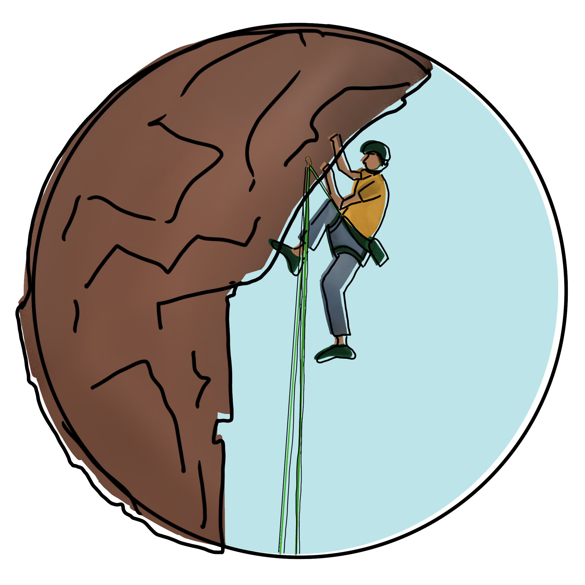
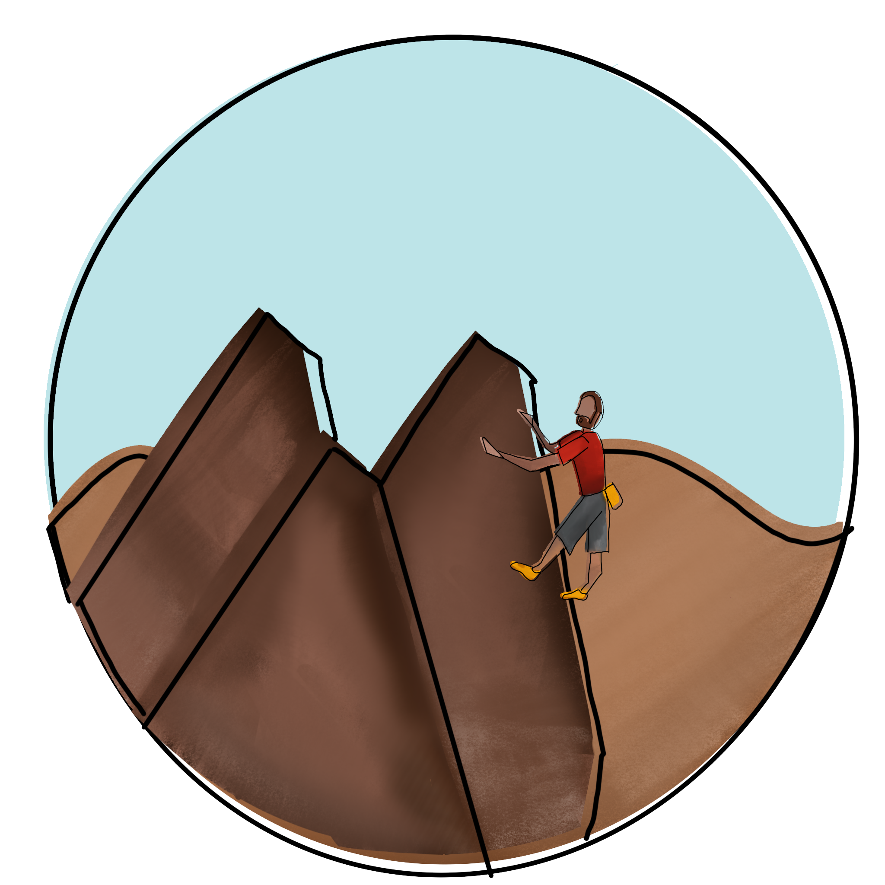

TYPES OF
ROCK CLIMBING

Free Climb
This type is separated into two categories: sport and traditional ("trad"). It is usually done with a rope and carabiner. Two people are involved, one to climb and the other one to belay the climber.
Free Solo
This type is similar to free climb, but is done without a rope, carabiner, and belayer. The climber simply uses his or her hands and feet to climb the rock.
Bouldering
This is the most basic type of climbing. No rope, carabiner, or belayer are needed, although crash pads are greatly advised. These climbs tend to be shorter and of greater difficulty.
